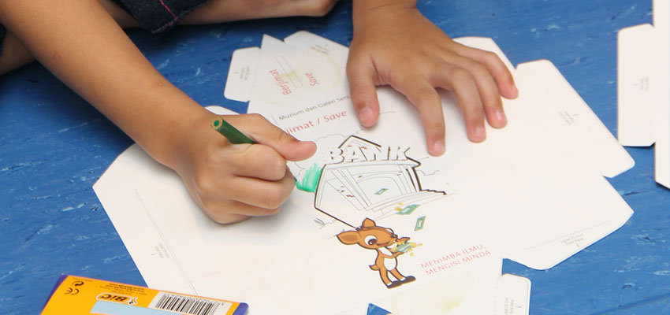
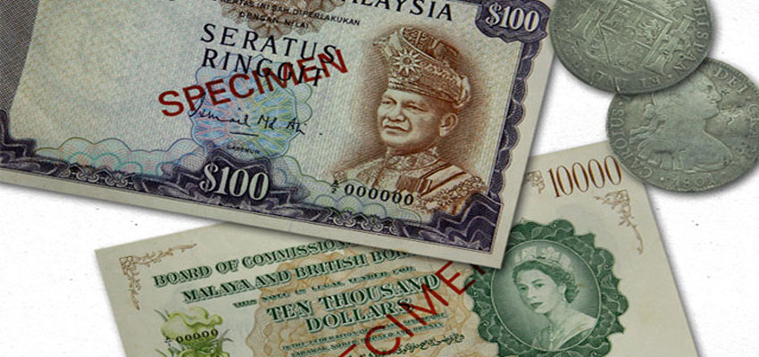
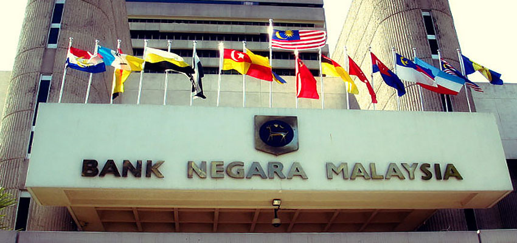
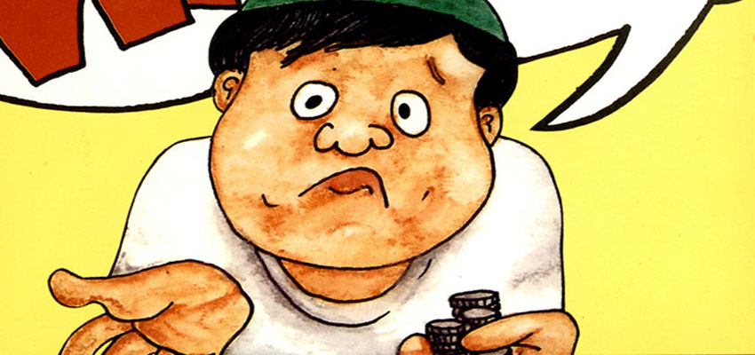
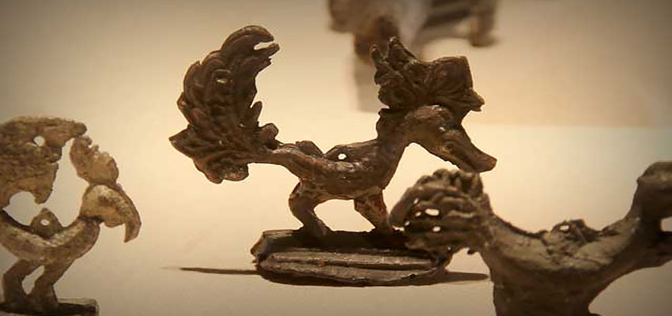
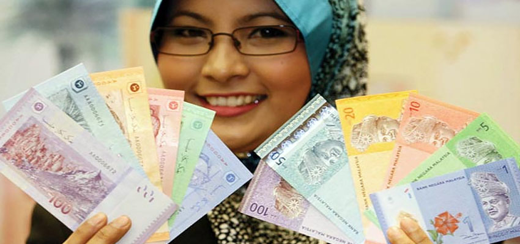

It is a fun and educational activity for children 5 to 9 years old. Kids can make their own paper piggy banks and learn about the
"Save, Spend and Share" principles. This activity introduces children to the ability to choose for their money. In this program, children will learn the
important of money and it uses in future. The children also can learn when to spend their money and when should they save their money.

Where does the word "ringgit" come from? The 45-minute lecture will take you back in time and explore the history of the Malaysian currency.
In this program, the visitor will be learned about the history of Malaysian Ringgit. The visitor will be learned about the Malaysian Ringgit through
the video lecture in the museum.

This is a 45-minute lecture on the role and function of Bank Negara Malaysia. This is a pre-booked meeting depending on the availability of
facilitators. In this program, visitor can book for the program before come to the museum. This program is targeted to the student to learn
what in Bank Negara Malaysia activity.

Do you know the origin of money? Why is money important in our daily lives? Know the beginning of currency exchange. Understand the
factors that cause changes in the size of money and the basic concept of how money spreads in a market. This program is suitable for high
school students between the ages of 13 and 17. This program will teach the visitor about money. The visitor will be learned what is money and their
important to live. The visitor will know why we need money in our daily lives and their factor in lives. Children that join the program will learned the
important of money at earlier stage.

Children have the opportunity to gain valuable knowledge through visits and educational activities while visiting the Numismatic Gallery. Research
and study the types of money using a worksheet. These self-contained worksheets are aimed at elementary and secondary school children.

This is a discussion on Malaysian currency that will suggest its security features, exchange prices for damaged banknotes, the time to follow when
looking for counterfeit banknotes, and how to handle polymer banknotes. It also teaches how to authenticate our banknotes using simple touch, look, tilt
and check methods. In this program, the facilitator will teach the visitor how to identify counterfeits banknotes to avoid being scam from scammer.